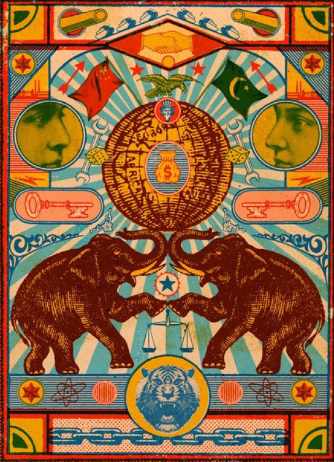
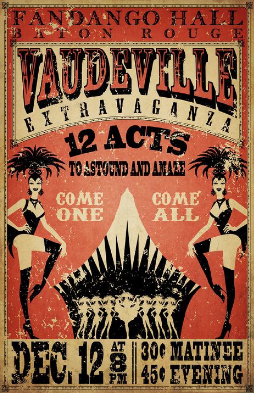
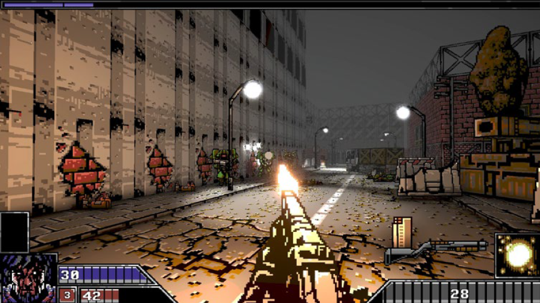

Exhausted? Enraged?In need of some hard core fun? Welcome to Carnival Fury! A place to let off steam when you just can’t take it anymore!
De repente, o som de uma máquina ligando. Olha para o lado e vê uma barraca acesa. No caminho o som contínuo da máquina fica mais nítido. Ao chegar lá, vê um estande de tiro estilo antigo. E no trilho vê uma figura de madeira deslizando de um lado para o outro. A figura ri provocante. Uma espingarda surge no balcão e brilha com um som leve. A figura solta uma risadinha tétrica. A mulher pega a arma, a figura leva um sustinho de leve e ri excitada, continuando a se mover de um lado para o outro (seus olhos sempre focados na mulher).

THE MORE WOMEN WHO SPEAK UP,
the more women who speak up.
THE MORE WOMEN WHO KILL THEIR DEMONS,
the less demons will feel like they can
SELF-LIBERATION
Don’t worry,
it’s just a game.